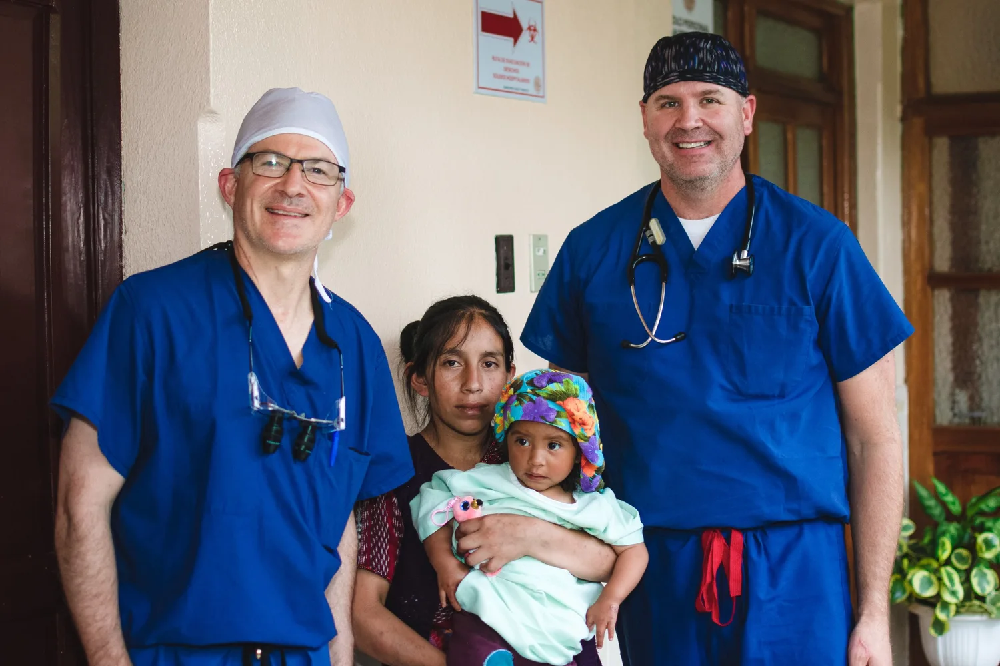
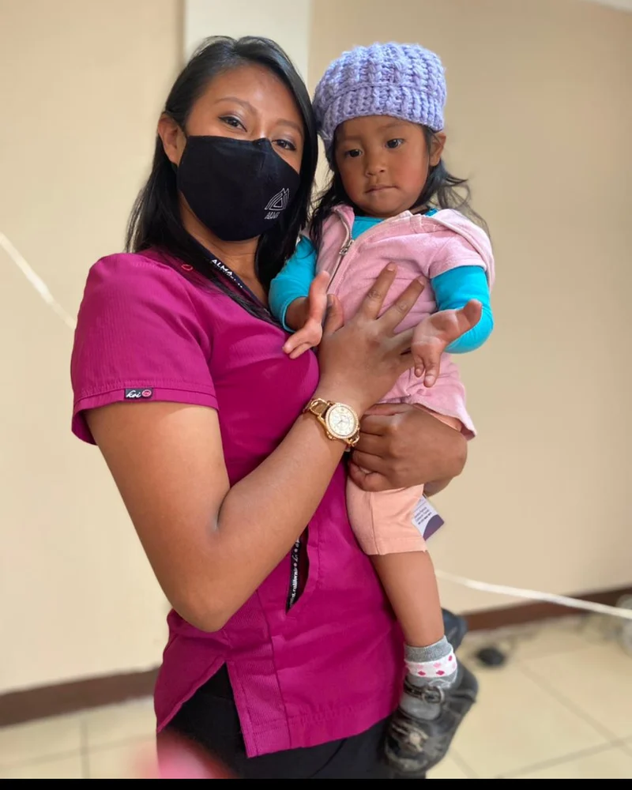

Ebelinda's story
Two and a half, and ready to hold the world.

Ebelinda was born with syndactyly (webbed fingers) on both hands. On his first ALMA trip in 2021, Kootenai Health surgeon Dr. Patrick Mullen corrected her right hand, with her mom, Juana Lopez, close by. The family sent videos of her hand therapy. On a later ALMA mission, the team surgically corrected her left hand, which was missing its middle finger, separating her thumb from her index finger.

1 · Before surgery X-ray of both hands, born with syndactyly

2 · 2021: right hand Dr. Patrick Mullen corrects her right hand on his first ALMA mission

3 · Right hand, fixed Her right hand after surgery
4 · Follow-up
Follow-up matters as much as the surgery. Ebelinda's care continued in Guatemala, with visits to her surgeon and hand therapy close to home, long after the mission team left. That local care is what turns one operation into a lasting change.
